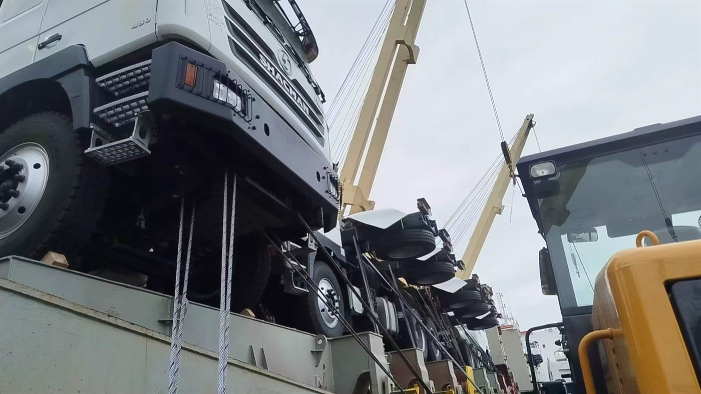

Direct answer: Loading and shipping photos do not replace a contract, but they give overseas buyers practical evidence of vehicle status, loading method and shipment progress.
Use photos to reduce remote-buying uncertainty
Many overseas buyers cannot visit China before every order. Photos of inspection, loading and shipping help create a clearer process trail.
Ask for the right photo list
Useful photos include VIN or nameplate, cab, body, tires, engine area when applicable, accessories, loading position and shipping marks.
Combine photos with documents
Photos should be used together with proforma invoice, specification sheet, packing or loading information and destination documents.
- contract model and chassis information
- inspection photo list before loading
- loading method and vessel or trailer evidence
- documents required by destination market
- contact person for shipment updates
Frequently asked questions
Do loading photos prove final specification?
They prove visible loading status, but technical specification should be checked against written documents and inspection photos.
Can buyers request photos before shipment?
Yes. Inspection, loading and shipping photos can be coordinated for export orders.
For product-level comparison, review export support and shipping page or send your requirement through the truck quotation form.
Request this truck configuration
Send destination, application, payload or tank volume, road condition, quantity and expected delivery time. Andy will help confirm a workable export configuration.